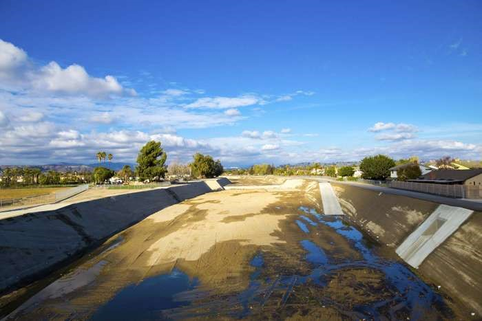

Water scarcity in the world
Water scarcity is referred to the insufficient freshwater to meet the human and environmental demands of a given area. Water scarcity is inextricably linked to human rights, and sufficient access to safe drinking water is a priority for global development.
However, given the challenges of population growth, profligate use, growing pollution, and changes in weather patterns due to global warming, many countries and major cities worldwide, both wealthy and poor, have been facing increasing water scarcity from the last century.
Source: Britannica
There are two general types of water scarcity: physical and economic.
Physical Scarcity
Physical water scarcity, also called as absolute scarcity, is the result of a region’s demand not meeting with the limited water resources found there. According to the Food and Agricultural Organization (FAO) of the United Nations, around 1.2 billion people live in areas of physical scarcity; many of these people live in arid or semi-arid regions.
Physical water scarcity can also be seasonal. Two-thirds of the world’s population lives in areas which are subjected to the seasonal water scarcity for at least one month in a year. The number of people affected by physical water scarcity is expected to grow as populations increase and as weather patterns become more unpredictable and extreme.
Economic Scarcity
Economic water scarcity happens mostly due to the lack of the infrastructure of water in general or because of the poor management of water resources even if the infrastructure is up to the mark. The Food and Agriculture Organization estimates that around 1.6 billion people in the world face economic water shortage. In these areas, with economic water scarcity, there is usually a sufficient water resources available to meet human and environmental needs, but its access is limited due to poor infrastructure.
Mismanagement or lack of development may cause the accessible water to be polluted or unsanitary for human consumption. Economic water scarcity can also be a result of unregulated usage of water for agriculture or industry purpose, mostly at the expense of the general population. Finally, major inadequacies in water use, are usually due to the underrating of water in economics as a finite natural resource. This also contributes to the water scarcity.
This website is aimed to assist the knowledge seekers to find all the knowledge about water condensed into one place. Please do read further to find more Amazing facts about water. Happy learning!
Last Updated: 11-June-2020
Previous Page Next Page